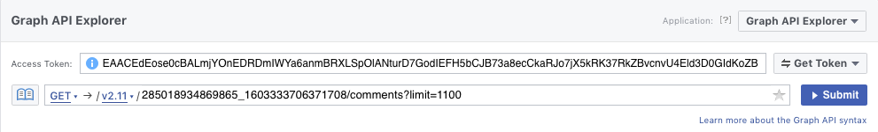
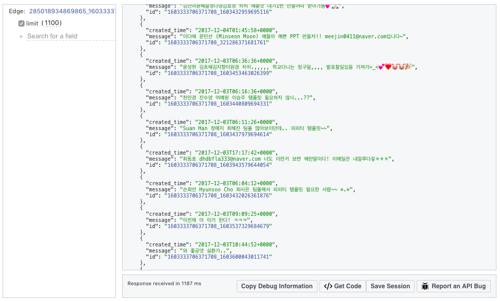
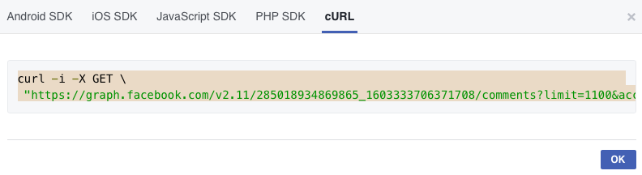

前言
因為閒置的粉絲團舉辦了一個贈送 ppt 模板的活動，只要留言自己的信箱就會把模板寄給你，非常佛心的一個活動。不可能一個一個留言把email複製下來，於是就想辦法省力一點的完成它吧！
首先，用 facebook 的 API 把留言全部抓下來、轉換成 csv 檔案這個步驟不會太麻煩。然而，大部分的留言卻不只包含了 email，還有一堆表情符號、感謝的話(감사합니다)、或是 tag 別人告訴好康之類…，手動整理一千多則留言非常費時，於是就決定用 python 來幫忙。
Graph API Explorer 取得留言
首先到 FB developer page 的 Graph API Explorer, 前提是要有 FB developer 的帳號，就可以直接點選 Get Token 取得 Token。接著在下面的欄位中填上粉專的 ID、指定貼文的 ID:

粉專的 ID 在關於裡面可以找到，貼文 ID 則是在貼文頁面的網址最後的一串數字
然後因為這裡要取得的是貼文的留言，因此在後面加上 /comments。
完成以後點擊Submit就會開始抓下所有這篇貼文底下的留言了。可以看到結果如下，用 json呈現：

將結果儲存成 Excel （csv檔）
在同個頁面的下方，點選 Get Code->cURL，將網址複製下來。

然後使用能把 json 轉換成 csv 的網站，把 csv 下載下來。就成功拿到所有留言的 csv 檔了！
從 csv中 抓出 email
用 Excel 打開檔案後可以看到，總共有三欄，分別是 留言時間、留言內容、留言ID。這裡我們要做的是從留言內容中抓出 email，程式如下：
1 | import csv |
後記
如此一來就節省很多時間了，email.txt中列出了所以留言裡面的 email，但如果其它字元是直接連著email，會同是被抓下來，像是檔案裡還是有一些ronyeh@gmail.com입니다這種狀況，這個部分要再修改一下re.findall那個地方的程式碼，把非英文的字元也過濾掉。還沒完全完成，但先簡單記錄一下步驟啦。
另外，希望能把前面的那些取得 csv 的步驟自動化，之後再研究吧。